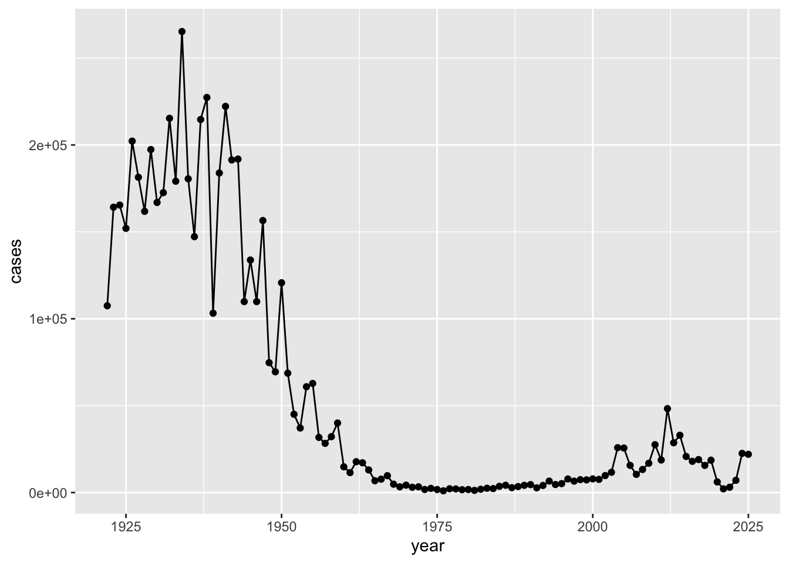
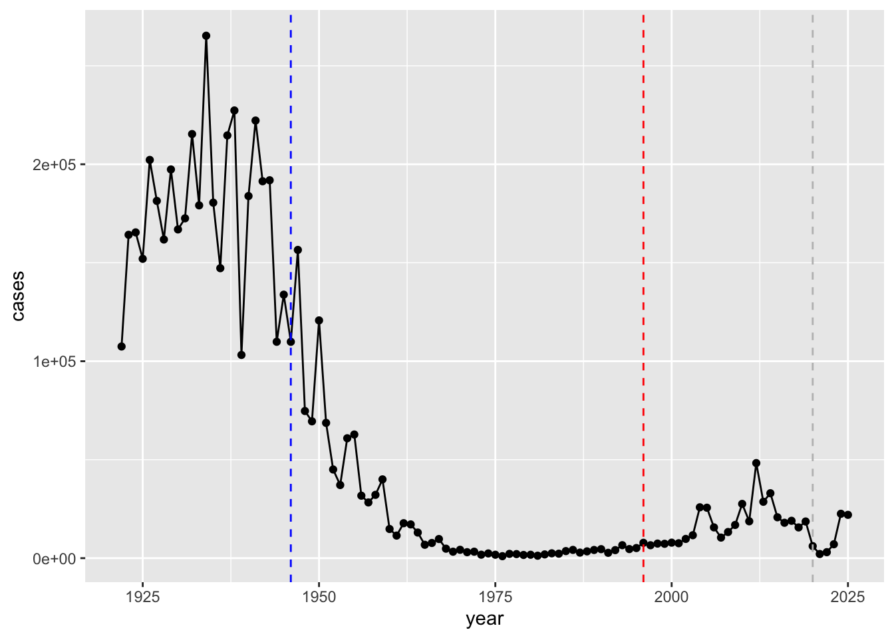
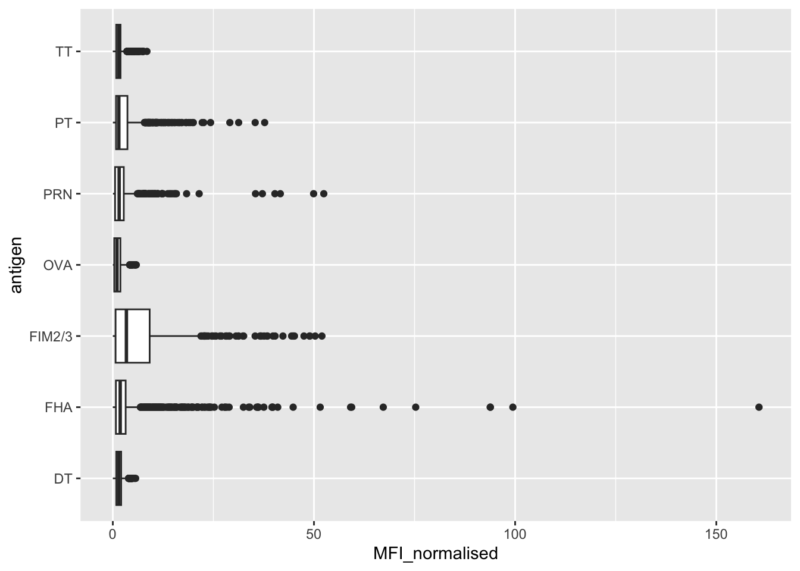
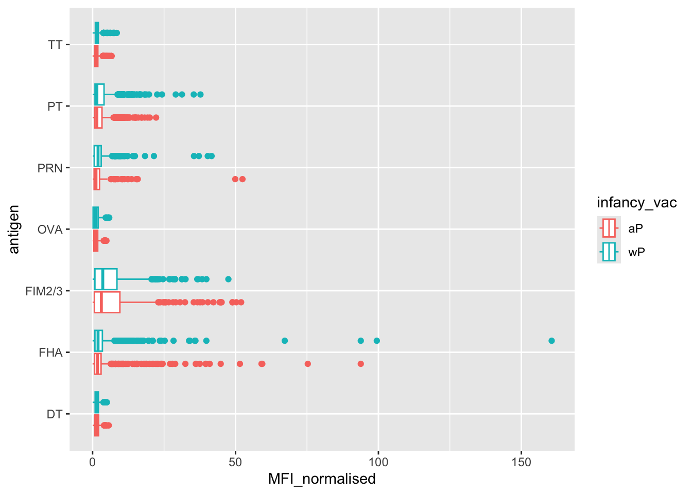
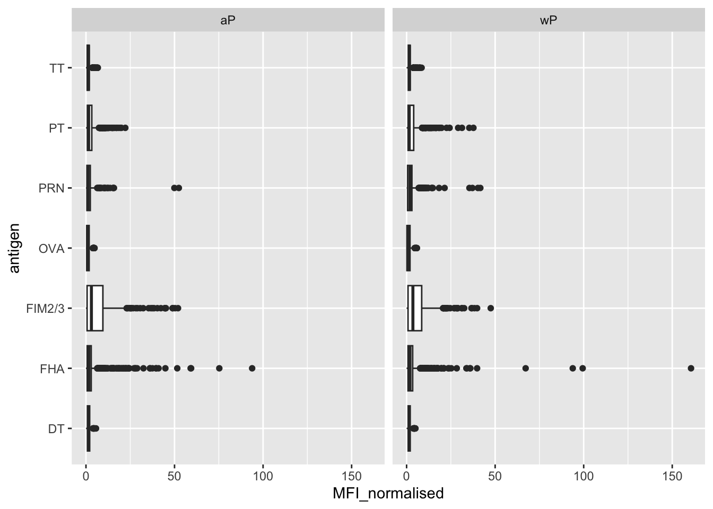
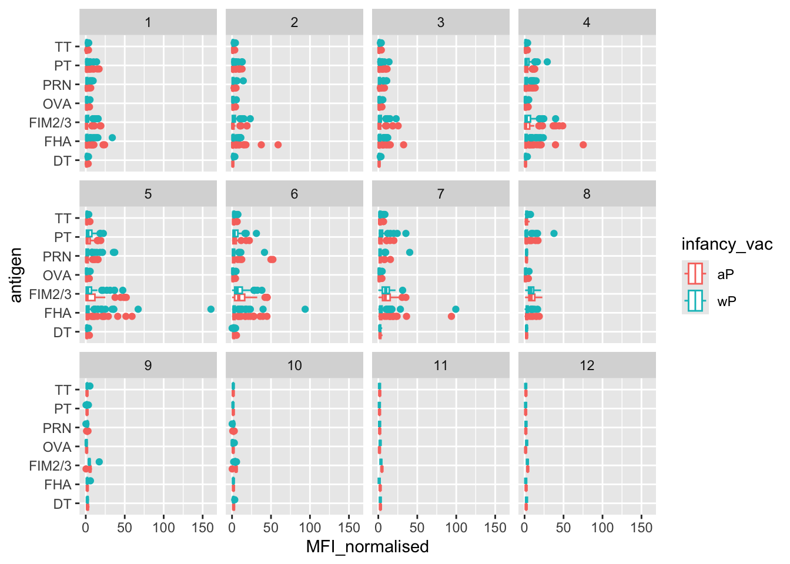
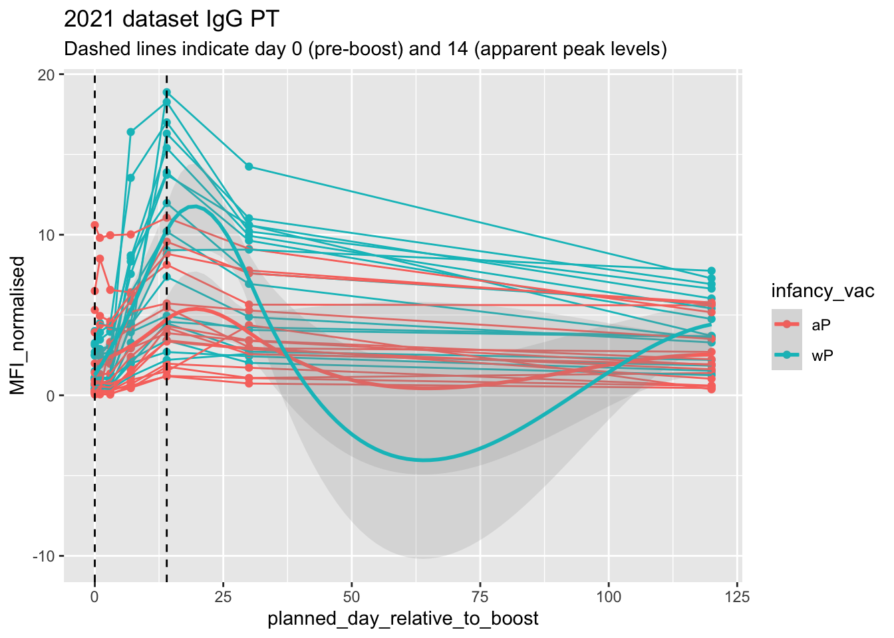

library(ggplot2)
ggplot(cdc) +
aes(year, cases) +
geom_point() +
geom_line()
Pertusis (whooping cough) is a common lung infection caused by the bacteria B. Pertussis. It can infect everyone but is most deadly for infacts (under 1 year of age)
The CDC tracks the number of Pertussis cases:
I want a plot of year vs. cases
library(ggplot2)
ggplot(cdc) +
aes(year, cases) +
geom_point() +
geom_line()
Q. Add annotation lines for the major milestones of wP vaccination roll-out (1946) and the switch to the aP vaccine (1996)
library(ggplot2)
ggplot(cdc) +
aes(year, cases) +
geom_point() +
geom_line() +
geom_vline(xintercept = 1946, col = "blue", lty = 2)+
geom_vline(xintercept = 1996, col = "red", lty = 2) +
geom_vline(xintercept = 2020, col = "grey", lty = 2)
It is clear from the CDC data that pertussis cases are once again increasing. For example, we can see that in 2012 the CDC reported 48,277 cases of pertussis in the United States. This is the largest number of cases reported since 1955, when 62,786 cases were reported. The pertussis field has several hypotheses for the resurgence of pertussis including (in no particular order): 1) more sensitive PCR-based testing, 2) vaccination hesitancy 3) bacterial evolution (escape from vaccine immunity), 4) waning of immunity in adolescents originally primed as infants with the newer aP vaccine as compared to the older wP vaccine.
The CMI-PB project < https://www.cmi-pb.org > mission is to provide the scientific ommunity with a comprehensive, high-quality and freely accessible resrouce of Pertussis booster vaccination
Basically, make available a large data set on the immune response to Pertussis. They use a “booster” vaccination as a proxy for Pertussis vaccination
They make their data available as JSON format API. We can read this into R with the read_json() function from the jsonlite package:
library(jsonlite)
subject <- read_json("https://www.cmi-pb.org/api/v5_1/subject", simplifyVector = TRUE)
head(subject) subject_id infancy_vac biological_sex ethnicity race
1 1 wP Female Not Hispanic or Latino White
2 2 wP Female Not Hispanic or Latino White
3 3 wP Female Unknown White
4 4 wP Male Not Hispanic or Latino Asian
5 5 wP Male Not Hispanic or Latino Asian
6 6 wP Female Not Hispanic or Latino White
year_of_birth date_of_boost dataset
1 1986-01-01 2016-09-12 2020_dataset
2 1968-01-01 2019-01-28 2020_dataset
3 1983-01-01 2016-10-10 2020_dataset
4 1988-01-01 2016-08-29 2020_dataset
5 1991-01-01 2016-08-29 2020_dataset
6 1988-01-01 2016-10-10 2020_datasetQ. How many aP and wP individuals are in this
subjecttable?
table(subject$infancy_vac)
aP wP
87 85 How many male/female are there?
table(subject$biological_sex)
Female Male
112 60 Q. What is the breakdown of
biological_genderandrace?
Q. Is this representative of the US population?
table(subject$race, subject$biological_sex)
Female Male
American Indian/Alaska Native 0 1
Asian 32 12
Black or African American 2 3
More Than One Race 15 4
Native Hawaiian or Other Pacific Islander 1 1
Unknown or Not Reported 14 7
White 48 32We can read more tables from the CMI-PB database
specimen <- read_json("https://www.cmi-pb.org/api/v5_1/specimen",
simplifyVector = TRUE)
ab_titter <- read_json("https://www.cmi-pb.org/api/v5_1/plasma_ab_titer",
simplifyVector = TRUE)head(specimen) specimen_id subject_id actual_day_relative_to_boost
1 1 1 -3
2 2 1 1
3 3 1 3
4 4 1 7
5 5 1 11
6 6 1 32
planned_day_relative_to_boost specimen_type visit
1 0 Blood 1
2 1 Blood 2
3 3 Blood 3
4 7 Blood 4
5 14 Blood 5
6 30 Blood 6head(ab_titter) specimen_id isotype is_antigen_specific antigen MFI MFI_normalised
1 1 IgE FALSE Total 1110.21154 2.493425
2 1 IgE FALSE Total 2708.91616 2.493425
3 1 IgG TRUE PT 68.56614 3.736992
4 1 IgG TRUE PRN 332.12718 2.602350
5 1 IgG TRUE FHA 1887.12263 34.050956
6 1 IgE TRUE ACT 0.10000 1.000000
unit lower_limit_of_detection
1 UG/ML 2.096133
2 IU/ML 29.170000
3 IU/ML 0.530000
4 IU/ML 6.205949
5 IU/ML 4.679535
6 IU/ML 2.816431To make sense of all this data, we need to “join” (a.k.a. “merge” or “link”) all these tables together. Only then will you now that a given Ab measurement (from the ab_titter table) was collected on a certain date (from the specimen table) from a certain wP or aP subject (from the subject table).
We can use dplyr and the *_join() family of functions to do this
library(dplyr)
Attaching package: 'dplyr'The following objects are masked from 'package:stats':
filter, lagThe following objects are masked from 'package:base':
intersect, setdiff, setequal, unionmeta <- inner_join(subject, specimen)Joining with `by = join_by(subject_id)`head(meta) subject_id infancy_vac biological_sex ethnicity race
1 1 wP Female Not Hispanic or Latino White
2 1 wP Female Not Hispanic or Latino White
3 1 wP Female Not Hispanic or Latino White
4 1 wP Female Not Hispanic or Latino White
5 1 wP Female Not Hispanic or Latino White
6 1 wP Female Not Hispanic or Latino White
year_of_birth date_of_boost dataset specimen_id
1 1986-01-01 2016-09-12 2020_dataset 1
2 1986-01-01 2016-09-12 2020_dataset 2
3 1986-01-01 2016-09-12 2020_dataset 3
4 1986-01-01 2016-09-12 2020_dataset 4
5 1986-01-01 2016-09-12 2020_dataset 5
6 1986-01-01 2016-09-12 2020_dataset 6
actual_day_relative_to_boost planned_day_relative_to_boost specimen_type
1 -3 0 Blood
2 1 1 Blood
3 3 3 Blood
4 7 7 Blood
5 11 14 Blood
6 32 30 Blood
visit
1 1
2 2
3 3
4 4
5 5
6 6Let’s do one more inner_join() to join the ab_titter with all our meta data
abdata <- inner_join(ab_titter, meta)Joining with `by = join_by(specimen_id)`head(abdata) specimen_id isotype is_antigen_specific antigen MFI MFI_normalised
1 1 IgE FALSE Total 1110.21154 2.493425
2 1 IgE FALSE Total 2708.91616 2.493425
3 1 IgG TRUE PT 68.56614 3.736992
4 1 IgG TRUE PRN 332.12718 2.602350
5 1 IgG TRUE FHA 1887.12263 34.050956
6 1 IgE TRUE ACT 0.10000 1.000000
unit lower_limit_of_detection subject_id infancy_vac biological_sex
1 UG/ML 2.096133 1 wP Female
2 IU/ML 29.170000 1 wP Female
3 IU/ML 0.530000 1 wP Female
4 IU/ML 6.205949 1 wP Female
5 IU/ML 4.679535 1 wP Female
6 IU/ML 2.816431 1 wP Female
ethnicity race year_of_birth date_of_boost dataset
1 Not Hispanic or Latino White 1986-01-01 2016-09-12 2020_dataset
2 Not Hispanic or Latino White 1986-01-01 2016-09-12 2020_dataset
3 Not Hispanic or Latino White 1986-01-01 2016-09-12 2020_dataset
4 Not Hispanic or Latino White 1986-01-01 2016-09-12 2020_dataset
5 Not Hispanic or Latino White 1986-01-01 2016-09-12 2020_dataset
6 Not Hispanic or Latino White 1986-01-01 2016-09-12 2020_dataset
actual_day_relative_to_boost planned_day_relative_to_boost specimen_type
1 -3 0 Blood
2 -3 0 Blood
3 -3 0 Blood
4 -3 0 Blood
5 -3 0 Blood
6 -3 0 Blood
visit
1 1
2 1
3 1
4 1
5 1
6 1Q. How many different Ab “isotypes” values are in this dataset?
table(abdata$isotype)
IgE IgG IgG1 IgG2 IgG3 IgG4
6698 7265 11993 12000 12000 12000 Q. How many different “antigen” values are measured
table(abdata$antigen)
ACT BETV1 DT FELD1 FHA FIM2/3 LOLP1 LOS Measles OVA
1970 1970 6318 1970 6712 6318 1970 1970 1970 6318
PD1 PRN PT PTM Total TT
1970 6712 6712 1970 788 6318 Let’s focus on IgG isotype
igg <- abdata |>
filter(isotype =="IgG")
head(igg) specimen_id isotype is_antigen_specific antigen MFI MFI_normalised
1 1 IgG TRUE PT 68.56614 3.736992
2 1 IgG TRUE PRN 332.12718 2.602350
3 1 IgG TRUE FHA 1887.12263 34.050956
4 19 IgG TRUE PT 20.11607 1.096366
5 19 IgG TRUE PRN 976.67419 7.652635
6 19 IgG TRUE FHA 60.76626 1.096457
unit lower_limit_of_detection subject_id infancy_vac biological_sex
1 IU/ML 0.530000 1 wP Female
2 IU/ML 6.205949 1 wP Female
3 IU/ML 4.679535 1 wP Female
4 IU/ML 0.530000 3 wP Female
5 IU/ML 6.205949 3 wP Female
6 IU/ML 4.679535 3 wP Female
ethnicity race year_of_birth date_of_boost dataset
1 Not Hispanic or Latino White 1986-01-01 2016-09-12 2020_dataset
2 Not Hispanic or Latino White 1986-01-01 2016-09-12 2020_dataset
3 Not Hispanic or Latino White 1986-01-01 2016-09-12 2020_dataset
4 Unknown White 1983-01-01 2016-10-10 2020_dataset
5 Unknown White 1983-01-01 2016-10-10 2020_dataset
6 Unknown White 1983-01-01 2016-10-10 2020_dataset
actual_day_relative_to_boost planned_day_relative_to_boost specimen_type
1 -3 0 Blood
2 -3 0 Blood
3 -3 0 Blood
4 -3 0 Blood
5 -3 0 Blood
6 -3 0 Blood
visit
1 1
2 1
3 1
4 1
5 1
6 1Make a plot of “MFI_normalized” values for all antigen values.
ggplot(igg) +
aes(MFI_normalised, antigen) +
geom_boxplot()
The antigen “PT”, “FIM2/3” and “FHA” appear to have the widest range of values.
Q. Is there a difference for these responses between aP and wP individuals?
ggplot(igg) +
aes(MFI_normalised, antigen, col=infancy_vac) +
geom_boxplot() 
library(ggplot2)
ggplot(igg) +
aes(MFI_normalised, antigen) +
geom_boxplot() +
facet_wrap(~infancy_vac)
Is there a difference with time (i.e. before booster shoot vs after booster shot)
ggplot(igg) +
aes(MFI_normalised, antigen, col=infancy_vac) +
geom_boxplot() +
facet_wrap(~visit)
Lets finish this section by looking at the 2021 dataset IgG PT antigen levels time-course:
## Filter to 2021 dataset, IgG and PT only
ab.PT.21 <- abdata |> filter(dataset == "2021_dataset",
isotype == "IgG",
antigen == "PT")
ggplot(ab.PT.21) +
aes(x=planned_day_relative_to_boost,
y=MFI_normalised,
col=infancy_vac,
group=subject_id) +
geom_point() +
geom_line() +
geom_smooth(aes(group = infancy_vac),
alpha = 0.2) +
geom_vline(xintercept=0, linetype="dashed") +
geom_vline(xintercept=14, linetype="dashed") +
labs(title="2021 dataset IgG PT",
subtitle = "Dashed lines indicate day 0 (pre-boost) and 14 (apparent peak levels)")`geom_smooth()` using method = 'loess' and formula = 'y ~ x'